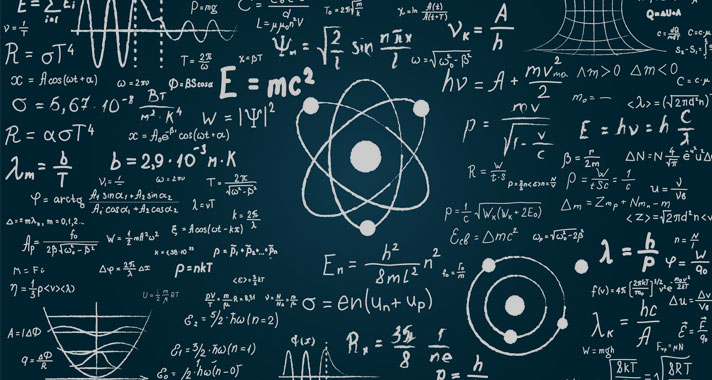
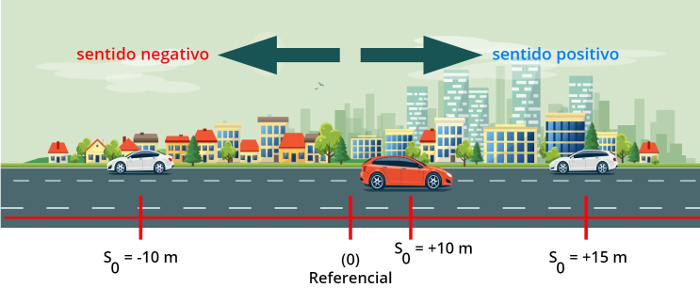

O movimento uniforme ocorre quando um móvel desloca-se em linha reta e com velocidade constante. No movimento uniforme, o móvel percorre espaços iguais em intervalos de tempo iguais.
Imagine a seguinte situação: um veículo que se move em movimento uniforme, com velocidade de 20 km/h, terá se deslocado de sua posição inicial em 10 km, em um intervalo de tempo de 0,5 h (30 minutos). Em 1h, esse mesmo veículo terá se distanciado de sua posição inicial em 20 km.
Todos os movimentos uniformes devem ocorrer em linha reta, já que nesse tipo de movimento não há aceleração. Entenda: para que um móvel sofra uma alteração em sua direção de deslocamento, é necessário que uma força atue sobre ele, imprimindo-lhe uma aceleração e fazendo com que o móvel ganhe uma nova componente de velocidade.
Referenciais e classificação do movimentoPara definirmos corretamente o movimento de um corpo, é necessário escolher um referencial. Na Física, entendemos que referencial é a posição em que o observador se encontra. A figura abaixo mostra alguns veículos que se movem em diferentes sentidos ao longo da direção horizontal.
O referencial adotado na figura (marcado pelo ponto 0) é onde o observador se encontra. Segundo esse referencial, os carros, à esquerda, encontram-se em posições negativas, enquanto os carros, à direita, encontram-se em posições positivas.
É importante perceber que a escolha de outro referencial implicaria a mudança das posições iniciais de cada veículo e também a classificação dos seus movimentos. A figura abaixo mostra o que o referencial escolhido percebe: para ele, o carro laranja e o carro prata, à esquerda, afastam-se, enquanto o carro prata, à direita, aproxima-se dele.
Dizemos que, quando um móvel aproxima-se do seu referencial, seu movimento é regressivo. Caso o móvel afaste-se do seu referencial, seu movimento é progressivo. Além disso, atribuímos ao movimento progressivo o sinal positivo para a velocidade. Para o movimento regressivo, utilizamos o sinal negativo, indicando que a distância entre o móvel e seu referencial diminui com o tempo.
Gráficos do movimento uniformePodemos relacionar a posição de um móvel em função do tempo usando os gráficos. Para o movimento uniforme, os gráficos de posição em função do tempo formam retas com inclinação para cima ou para baixo, relacionadas ao movimento progressivo e regressivo, respectivamente.
Os gráficos de posição em função do tempo podem ser usados para determinar a velocidade do movimento. Para isso, basta percebermos que a velocidade do móvel é dada por sua tangente, ou seja, a razão entre o cateto oposto (ΔS) e o cateto adjacente à reta (Δt).
Os gráficos de velocidade em função do tempo para o movimento uniforme, por sua vez, são retas paralelas ao eixo horizontal, de módulo negativo ou positivo, de acordo com a sua classificação (progressivo ou regressivo).